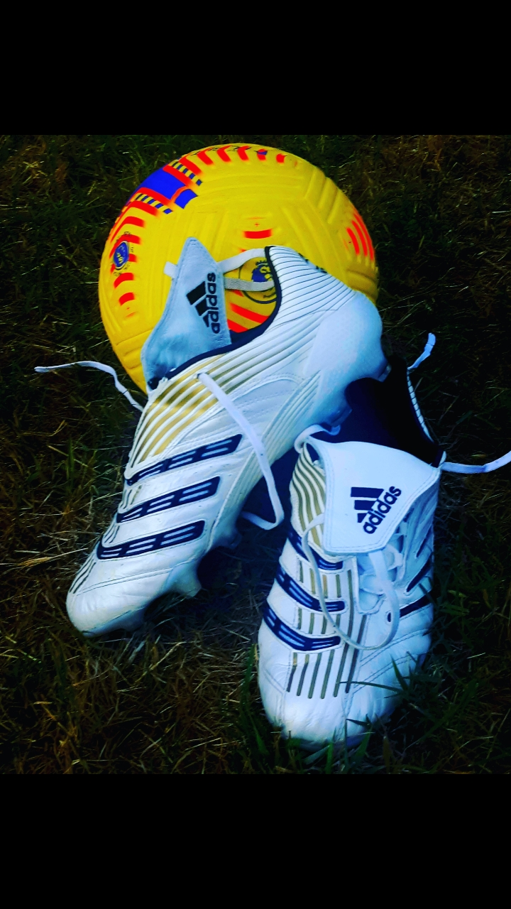
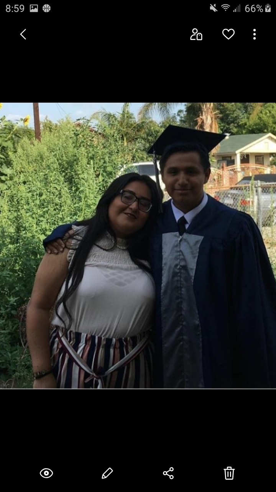
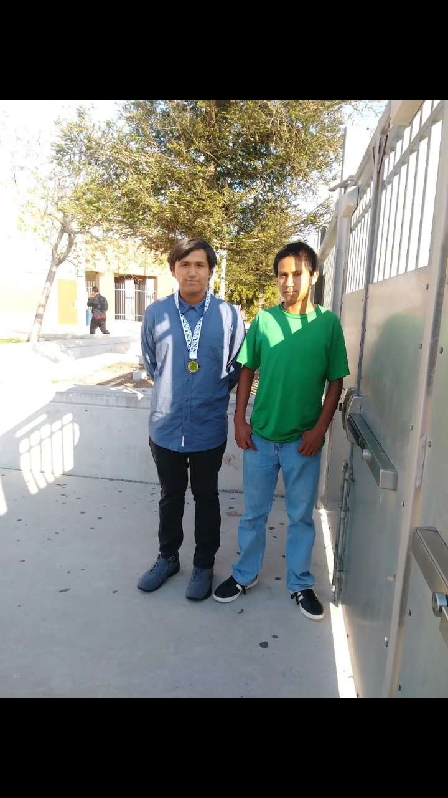
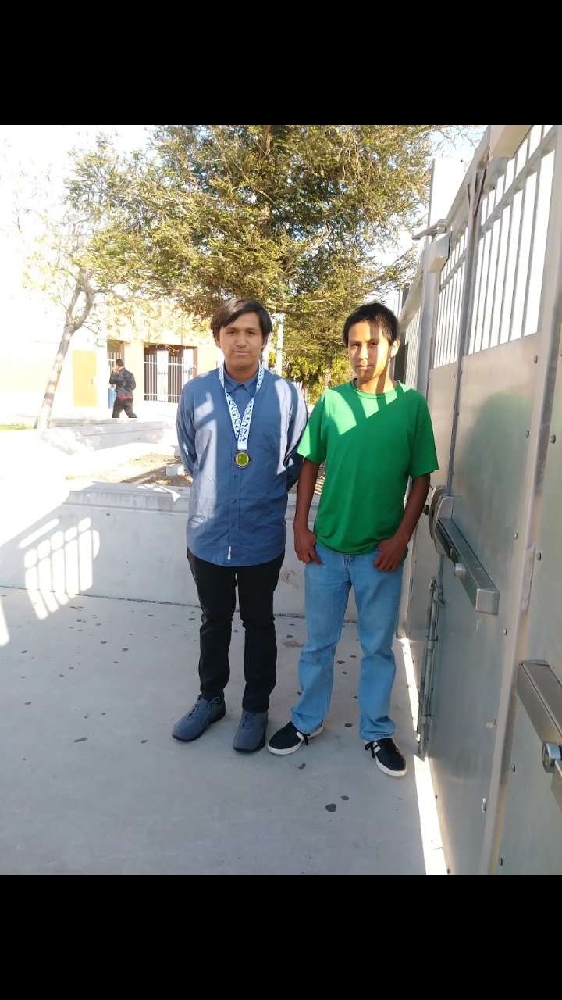

David Honorato
Fourth Year History Major!
As a history major, there have been numerous times where the professor assigns students complex primary sources for interpretation.
These primary sources range from all periods of human history, from the first manuscripts written at Mesopotamia to the contemporary article of modernity.
These primary sources provide all forms of perspectives. They give readers an insight to why certain events occured and how those at the time were
foolish to prevent a catastrophe from happening. Other documents provide readers information how certain civilizations united in order
to overcome challenges. Overall, being a history student provides one with an opportunity to sharpen one's reading, writitng,
and analytical skills since it is demanding.
In my spare time, I am a member of NSLS chapter on campus. I have been a member of this organization since Fall of 2020 in my third year at the University
of California Riverside. Unfortunately, when I first entered this organization because I was curious to what it had to offer, much
of these meeting were online. Therefore, it was extremely difficult to socialize and network since all of these meetings took place virtually.
The virtual setting was not ideal for me since it was difficult to do the mentioned tasks as stated previously. Nevertheless, to overcome these difficult
challenges, we would be assigned groups of peers in which we would socialize with. We would discuss several topics according to the ones that were assigned
to us by those that would organize these vitual gatherings. One of my favorite topics was getting to know my group. My group consisted of a total of five
individuals in which we would tell each other a unique aspect of our selves. I was surprised that we all had a different background story from each other
and we also had different interests. We were all majoring in different skills, yet it was this organization that allowed us to bond with each other. I also
play soccer in free time. I have been playing soccer for the longest I remember and it is an important part of my life. One sport I never thought I would
play and I never imagined I would enjoy is tennis. Although tennis is physically demanding, it is more of a psychological game than it is a physical one.
There have been countless times where, as I was playing, I would believe I would lose, yet would be the victor. Also, tennis is a sport I picked up fast,
which demonstrates I am a fast learner.
Experience
NSLS
• Participated in lenghty discussions
• Organized discussion topics
• Ensured all participated and had fun
Assistant Coach
• Ran training sessions
• Set out cones
• Ensured the athletes trained properly
• Assisted for high school and college intramural level
Education
UC Riverside
Portfolio




